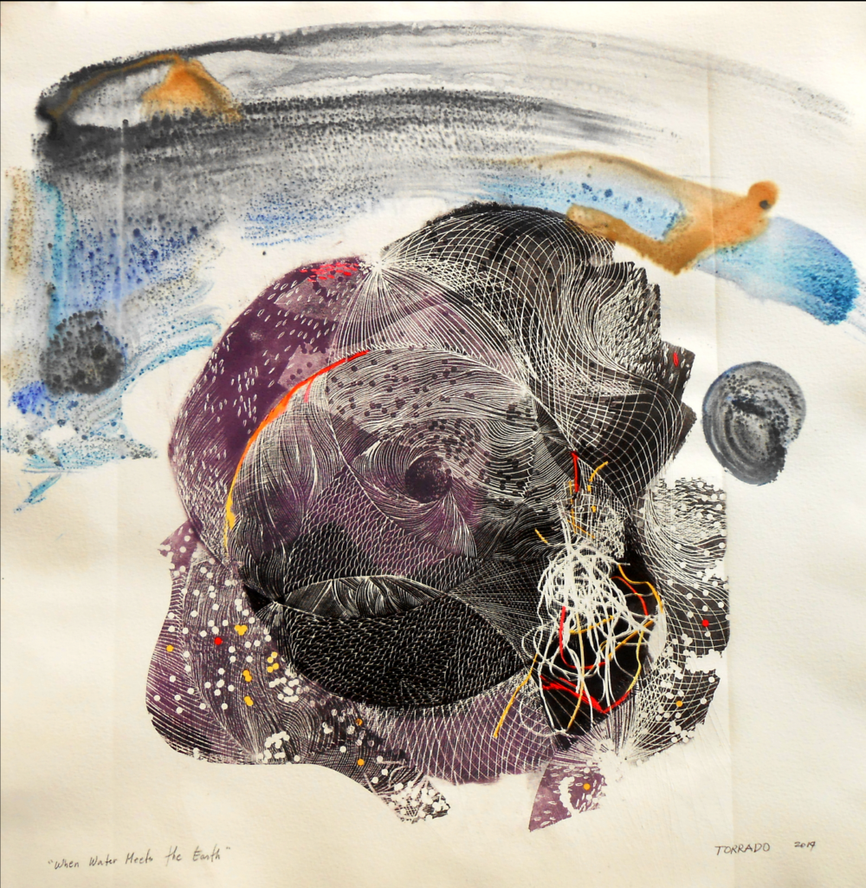
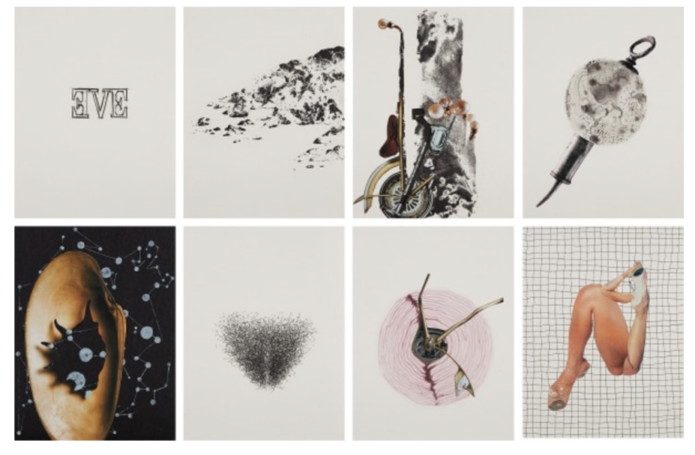
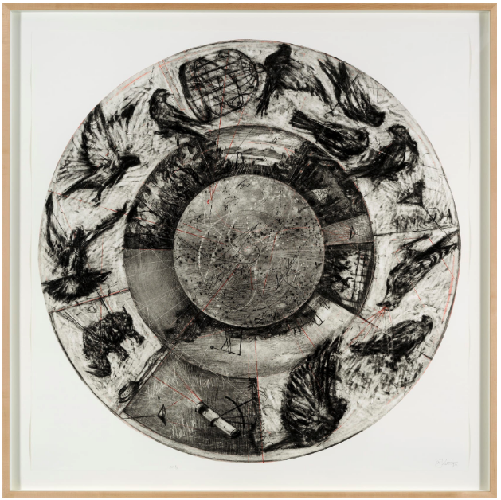
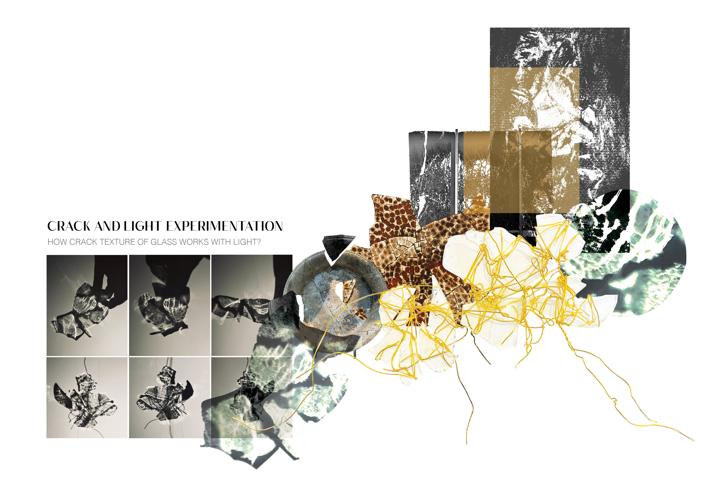
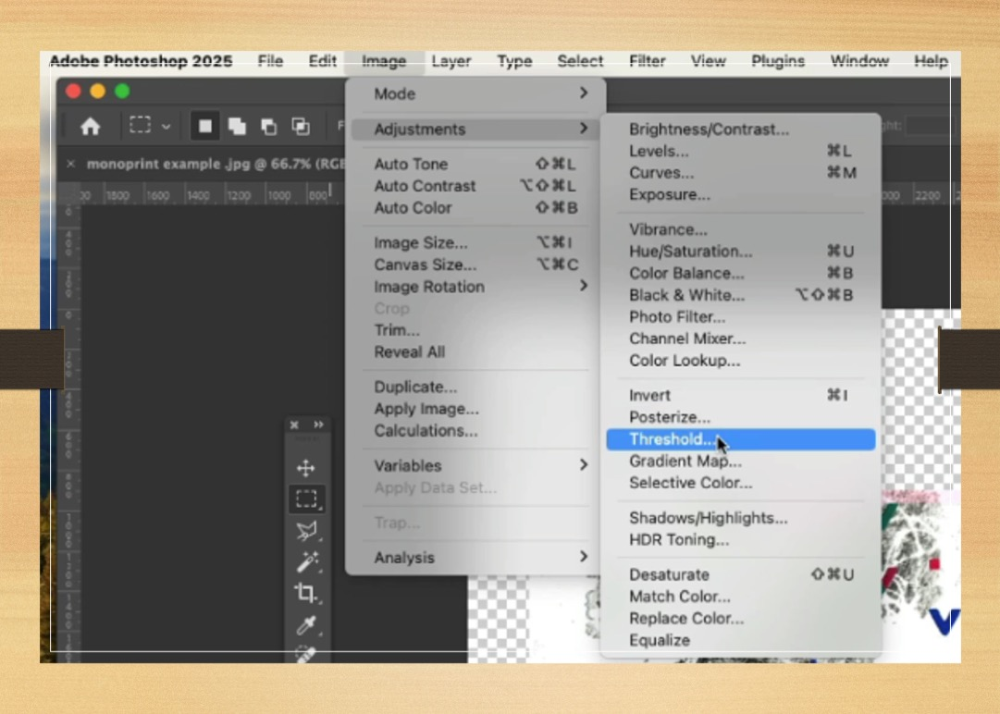
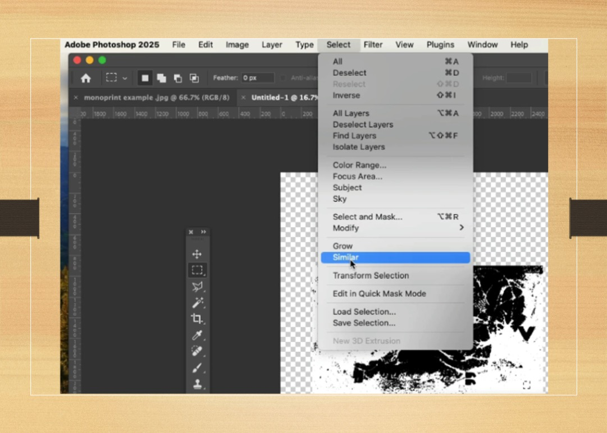
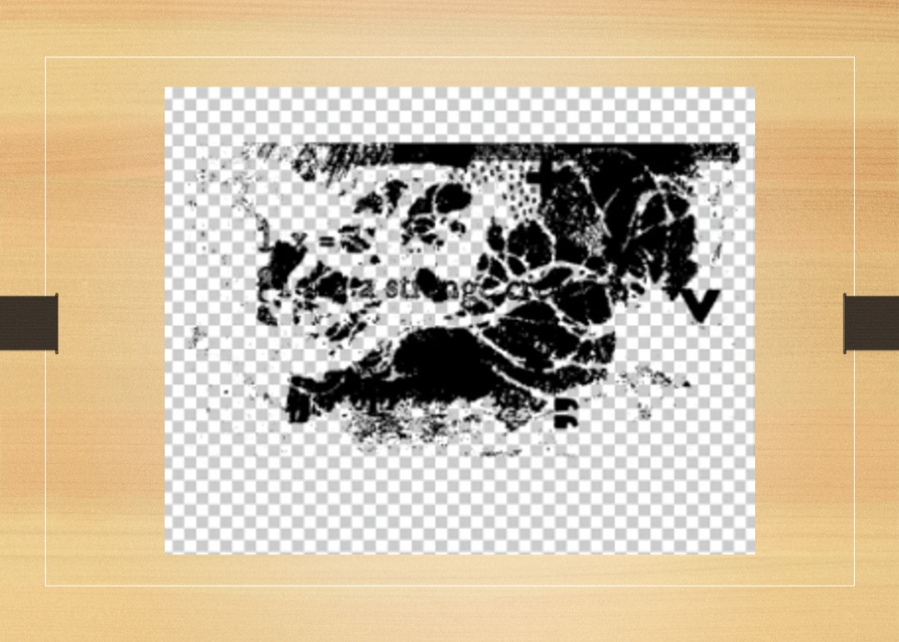
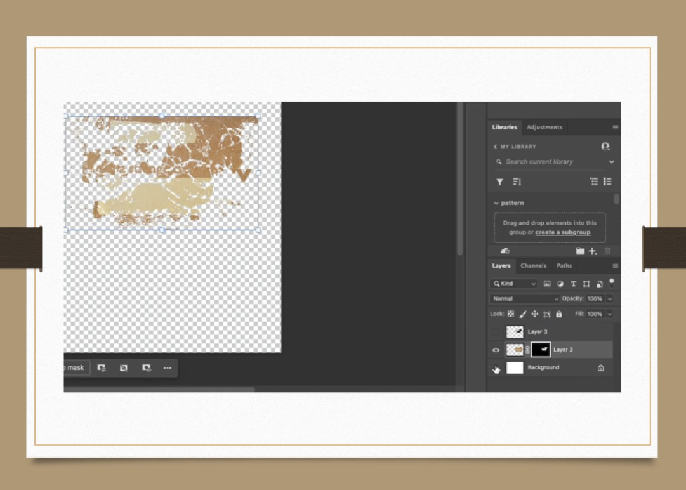

Digital Skills · Term 2 · Week 3 · IELS Level 5
MonoprintHandmade to Digital
Turn your oil pastel monoprints into digital textures. Use them in your Term 2 project.
Homework check: you need your 2–3 monoprints, scanned at 300 dpi. Homework instructions ↗
Artist Inspiration
Click a card to see more of the artist's work.

Benjie Torrado Cabrera
When Water Meets Earth, 2014 ↗
Wangechi Mutu
Eve, 2006 ↗
William Kentridge
Music Box Tondo, 2006 ↗Remember: reference any artist you use (Harvard).
Student Example
Student work · click to enlarge

Image not found:
monoprint-example.jpg
🔍 Enlarge
monoprint-example.jpg
Monoprint developed in Photoshop — Vu Linh Nghi Nguyen (Linnie)
Today's Tasks
Key words:
- Threshold — pure black and white, no grey
- Layer Mask — hide parts without deleting
- Blend Mode — how layers mix
Goal: bring your prints into Photoshop.
Scan
- 300 dpi or higher
- Colour mode (even for black)
- Print lies flat
- Save as JPG, PNG or TIFF
No scanner? Phone photo · from above · good light · no shadows.
Set up
- New document: A3 landscape · 300 dpi
- Duplicate the layer Cmd/Ctrl+J
- Save as PSD

Image not found:
photoshop-setup.jpg
🔍 Enlarge
photoshop-setup.jpg
Keep your original. Work on the copy.
✅ Task 1 Checklist
Goal: make your print black and white. Remove the white background.
Steps — click to open

Image not found:
threshold-adjustment.jpg
🔍 Enlarge
threshold-adjustment.jpg
- Move the slider
- Click OK

Image not found:
select-white-areas.jpg
🔍 Enlarge
select-white-areas.jpg
- Rectangular Marquee M
- Draw a box in a white area

Image not found:
delete-white.jpg
🔍 Enlarge
delete-white.jpg
- Press Delete
- Only the texture is left
- Deselect Cmd/Ctrl+D
Other Selection Tools
Magic Wand W
Areas of one colour
- Tolerance 20–40
- Shift add · Alt/Opt remove
Polygonal Lasso L
Straight edges
- Click points around the shape
- Join back to the start
✅ Task 2 Checklist
Goal: control your texture. Mix it into the page. Add colour.
Steps — click to open

Image not found:
layer-mask.jpg
🔍 Enlarge
layer-mask.jpg
- Layers panel → Add Layer Mask
- Black brush = hide
- White brush = show again
Layers panel → change Normal to:
MultiplyDarker · best on light backgrounds
OverlayMore contrast
ScreenLighter
Soft LightGentle contrast
Use Opacity to make it softer.
- Tick Colorize
- Move the sliders
💡 Quick colour
- Put a colour fill layer underneath
- Set the texture to a blend mode
✅ Task 3 Checklist
Goal: put your texture into your Term 2 design.
Backgrounds
Depth behind figuresSurfaces
On fabric or garmentsCollage
Layered design sheetsDetails
Small accentsSteps — click to open
- Drag the layer into your project file
- or Cmd/Ctrl+C → Cmd/Ctrl+V
- Cmd/Ctrl+T
- Drag corners (Shift keeps the shape)
- Enter to confirm
- Blend mode
- Layer mask
- Lower opacity
- Match your project colours
Student Example
Student work · click to enlarge

Image not found:
monoprint-example-student.jpg
🔍 Enlarge
monoprint-example-student.jpg
String + oil pastel print → Threshold → design — jayjay (Jidapa)
Why it works: handmade texture + clean digital edit + links to the project theme.
✅ Task 4 Checklist
Why? It shows how you learned. Reflection is assessed at Level 5.
Steps — click to open
- Type your full name
- Upload 2–3 screenshots — print, Threshold, final design
- Add a short caption to each
1. Techniques
Which tools did you use?2. Challenges
What was difficult? How did you fix it?3. What worked
What are you happy with?4. Next time
What will you change?
💡 Useful phrases
- "I used … to …"
- "This worked because …"
- "This was difficult because …"
- Click Download Progress Report (PDF)
- Save it — you upload it to Padlet next
✅ Report Checklist
Upload Three Items
1. Monoprints
Photos of 2–3 prints + materials used2. Digital design
Texture in your Term 2 project3. Progress Report
PDF from the report tool✅ Final Checklist
What You Learned
- Monoprints — oil pastel + objects
- Digitise — scan and set up in Photoshop
- Threshold & Select → Similar — remove white
- Masks & blend modes — refine texture
- Apply — texture in your project
- Reflection — explain your process
1 · Put the Steps in Order
Making a monoprint. Use ▲ ▼ to move steps.
2 · Multiple Choice
Which side of the tracing paper faces down?
First adjustment after you scan?
Which menu selects all the white at once?
Black brush on a layer mask…
Best blend mode for black texture on a light background?
Shortcut to deselect?